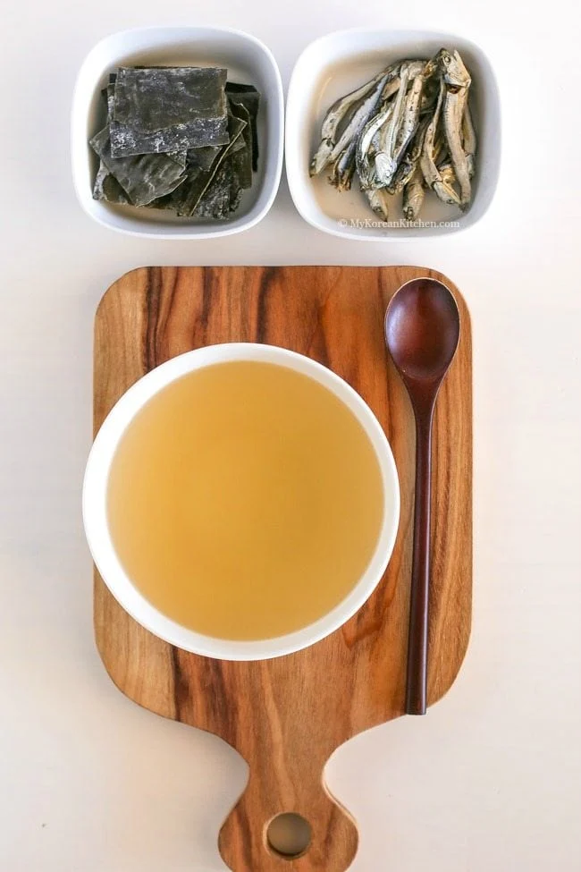

Dashi Stock 다시

Description
Dashi is Korean soup stock, which is used as a base stock in a Korean soup dish. Another term for this is yuksu (육수).
It is also used in some side dishes and in noodle dishes etc.
Korean dashi is typically made of dried anchovies and dried kelp. For more complex flavors, we can add dried shiitake mushrooms
radish, and green onion.
Ingredients (makes 4 servings)
- 6 cups water
- 10 g dried kelp
- 30 g dried anchovy
Steps
- Gently wipe dried kelp with a damp kitchen towel or kitchen paper to remove any debris or dust. Don't brush off the mannitol, the white powder that is a type of sugar contributing sweetness and umami to the stock.
- Soak the dried kelp in the water in a sauce pan for at lead 1 hour, preferably overnight.
- Remove the head and the black innards of the anchovy. Put the cleaned anchovy into a spice ball/large tea ball strainer.
- Add the anchovy filled spice ball into the sauce pan.
- 10 mins later, remove the kelp (with some tongs) and boil the anchovy for another 10 mins on low heat.
- Remove the anchovy ball and sieve the stock through kitchen muslin cloth to catch any leftover kelp or anchovy particles. Now the soup stock is ready to use. If you are going to use it later cool down and transfer it into an air tight container or a bottle. It should keep well for a few days in the fridge and up to 3 months in the freezer.
Additional Recipes